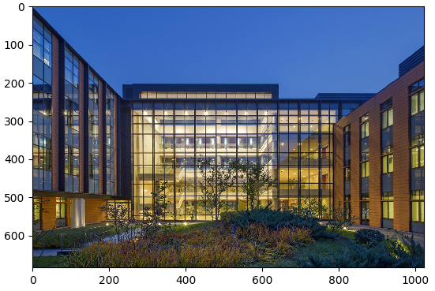

Data Processing and Augmentation

Overview
Data is the basis of deep learning. Data input plays an important role in the deep neural network training. Therefore, after the original dataset is obtained and before data is loaded and trained, data processing or augmentation is often required due to data size and performance restrictions, to obtain optimized data input.
MindSpore provides users with data processing and augmentation functions.
Essentially, data augmentation is implemented through the data processing operation
map. Yet data augmentation is described separately due to its diversified transform operations.
Data Processing Operations Supported by Mindspore
MindSpore supports multiple data processing operations, including repeat, batch, shuffle, and map, as shown in the following table.
Operation |
Description |
|---|---|
repeat |
Repeat a dataset to increase the data size. |
batch |
Process data in batches to accelerate the training process. |
shuffle |
Shuffle data. |
map |
Apply the provided functions or operators to the specified column data. |
zip |
Combine multiple datasets into one dataset. |
The operations can be performed separately. In practice, they are often used together as needed. You are advised to use them in the following sequence:
In the following example, the shuffle, batch, and repeat operations are performed when the MNIST dataset is read.
import mindspore.dataset as ds
ds1 = ds.MnistDataset(MNIST_DATASET_PATH, MNIST_SCHEMA) # Create MNIST dataset.
ds1 = ds1.shuffle(buffer_size=10000)
ds1 = ds1.batch(32, drop_remainder=True)
ds1 = ds1.repeat(10)
In the preceding operations, data is shuffled, every 32 data records are combined into a batch, and then the dataset is repeated for 10 times.
The following describes how to construct a simple dataset ds1 and perform data processing operations on it.
Import the module on which data processing depends.
import mindspore.dataset as ds
Define the
generator_funcfunction for dataset generating.def generator_func(): for i in range(5): yield (np.array([i, i+1, i+2]),)
Use
GeneratorDatasetto create the datasetds1for data processing.ds1 = ds.GeneratorDataset(generator_func, ["data"]) print("ds1:") for data in ds1.create_dict_iterator(): print(data["data"])
The output is as follows:
ds1: [0 1 2] [1 2 3] [2 3 4] [3 4 5] [4 5 6]
repeat
In limited datasets, to optimize the network, a dataset is usually trained for multiple times.
In machine learning, an epoch refers to one cycle through the full training dataset.
During multiple epochs, repeat can be used to increase the data size. The definition of repeat is as follows:
def repeat(self, count=None):
You can define the dataset ds2 and call repeat to increase the data size. The sample code is as follows:
ds2 = ds.GeneratorDataset(generator_func, ["data"])
ds2 = ds2.repeat(2)
print("ds2:")
for data in ds2.create_dict_iterator():
print(data["data"])
Set the multiple to 2. Therefore, the data size of ds2 is twice that of the original dataset ds1. The output is as follows:
ds2:
[0 1 2]
[1 2 3]
[2 3 4]
[3 4 5]
[4 5 6]
[0 1 2]
[1 2 3]
[2 3 4]
[3 4 5]
[4 5 6]
batch
Combine data records in datasets into batches. In practice, data can be processed in batches. Training data in batches can reduce training steps and accelerate the training process. MindSpore uses the batch function to implement the batch operation. The function is defined as follows:
def batch(self, batch_size, drop_remainder=False, num_parallel_workers=None)
Use the dataset ds1 generated by GeneratorDataset to construct two datasets.
In the first dataset
ds2, combine every two data records into a batch.In the second dataset
ds3, combine every three data records into a batch, and remove the remaining data records that are less than three.
The sample code of ds2 is as follows:
ds2 = ds1.batch(batch_size=2) # Default drop_remainder is False, the last remainder batch isn't dropped.
print("batch size:2 drop remainder:False")
for data in ds2.create_dict_iterator():
print(data["data"])
The output is as follows:
batch size:2 drop remainder:False
[[0 1 2]
[1 2 3]]
[[2 3 4]
[3 4 5]]
[[4 5 6]]
The sample code of ds3 is as follows:
ds3 = ds1.batch(batch_size=3, drop_remainder=True) # When drop_remainder is True, the last remainder batch will be dropped.
print("batch size:3 drop remainder:True")
for data in ds3.create_dict_iterator():
print(data["data"])
The output is as follows:
batch size:3 drop remainder:True
[[0 1 2]
[1 2 3]
[2 3 4]]
shuffle
You can shuffle ordered or repeated datasets.
The shuffle operation is used to shuffle data. A larger value of buffer_size indicates a higher shuffling degree, consuming more time and computing resources.
The definition of shuffle is as follows:
def shuffle(self, buffer_size):
Call shuffle to shuffle the dataset ds1. The sample code is as follows:
print("Before shuffle:")
for data in ds1.create_dict_iterator():
print(data["data"])
ds2 = ds1.shuffle(buffer_size=5)
print("After shuffle:")
for data in ds2.create_dict_iterator():
print(data["data"])
The possible output is as follows. After data is shuffled, the data sequence changes randomly.
Before shuffle:
[0 1 2]
[1 2 3]
[2 3 4]
[3 4 5]
[4 5 6]
After shuffle:
[3 4 5]
[2 3 4]
[4 5 6]
[1 2 3]
[0 1 2]
map
The map operation is used to process data. For example, convert the dataset of color images into the dataset of grayscale images. You can flexibly perform the operation as required.
MindSpore provides the map function to map datasets. You can apply the provided functions or operators to the specified column data.
You can customize the function or use c_transforms or py_transforms for data augmentation.
For details about data augmentation operations, see Data Augmentation section.
The definition of map is as follows:
def map(self, input_columns=None, operations=None, output_columns=None, columns_order=None,
num_parallel_workers=None):
In the following example, the map function is used to apply the defined anonymous function (lambda function) to the dataset ds1 so that the data values in the dataset are multiplied by 2.
func = lambda x : x*2 # Define lambda function to multiply each element by 2.
ds2 = ds1.map(input_columns="data", operations=func)
for data in ds2.create_dict_iterator():
print(data["data"])
The code output is as follows. Data values in each row of the dataset ds2 is multiplied by 2.
[0 2 4]
[2 4 6]
[4 6 8]
[6 8 10]
[8 10 12]
zip
MindSpore provides the zip function to combine multiple datasets into one dataset.
If the column names in the two datasets are the same, the two datasets are not combined. Therefore, pay attention to column names.
If the number of rows in the two datasets is different, the number of rows after combination is the same as the smaller number.
def zip(self, datasets):
Use the preceding construction method of the dataset
ds1to construct the datasetds2.def generator_func2(): for i in range(5): yield (np.array([i-3, i-2, i-1]),) ds2 = ds.GeneratorDataset(generator_func2, ["data2"])
Use
zip()to combine thedata1column of the datasetds1and thedata2column of the datasetds2into the datasetds3.ds3 = ds.zip((ds1, ds2)) for data in ds3.create_dict_iterator(): print(data)
The output is as follows:
{'data1': array([0, 1, 2], dtype=int64), 'data2': array([-3, -2, -1], dtype=int64)} {'data1': array([1, 2, 3], dtype=int64), 'data2': array([-2, -1, 0], dtype=int64)} {'data1': array([2, 3, 4], dtype=int64), 'data2': array([-1, 0, 1], dtype=int64)} {'data1': array([3, 4, 5], dtype=int64), 'data2': array([0, 1, 2], dtype=int64)} {'data1': array([4, 5, 6], dtype=int64), 'data2': array([1, 2, 3], dtype=int64)}
Data Augmentation
During image training, especially when the dataset size is relatively small, you can preprocess images by using a series of data augmentation operations, thereby enriching the datasets.
MindSpore provides the c_transforms and py_transforms module functions for users to perform data augmentation. You can also customize functions or operators to perform data augmentation. The following table describes the two modules provided by MindSpore. For details, see the related description in the API reference document.
Module |
Implementation |
Description |
|---|---|---|
|
C++-based OpenCV implementation |
The performance is high. |
|
Python-based PIL implementation |
This module provides multiple image augmentation functions and the method for converting between PIL images and NumPy arrays. |
For users who would like to use Python PIL in image learning tasks, the py_transforms module is a good tool for image augmentation. You can use Python PIL to customize extensions.
Data augmentation requires the map function. For details about how to use the map function, see map.
Using the c_transforms Module
Import the module to the code.
import mindspore.dataset.transforms.vision.c_transforms as transforms import matplotlib.pyplot as plt import matplotlib.image as mpimg
Define data augmentation operators. The following uses
Resizeas an example:dataset = ds.ImageFolderDatasetV2(DATA_DIR, decode=True) # Decode images. resize_op = transforms.Resize(size=(500,500), interpolation=Inter.LINEAR) dataset.map(input_columns="image", operations=resize_op) for data in dataset.create_dict_iterator(): imgplot_resized = plt.imshow(data["image"]) plt.show()
The running result shows that the original image is changed from 1024 x 683 pixels to 500 x 500 pixels after data processing by using Resize.

Figure 1: Original image

Figure 2: Image after its size is reset
Using the py_transforms Module
Import the module to the code.
import mindspore.dataset.transforms.vision.py_transforms as transforms import matplotlib.pyplot as plt import matplotlib.image as mpimg
Define data augmentation operators and use the
ComposeOpAPI to combine multiple data augmentation operations. The following usesRandomCropas an example:dataset = ds.ImageFolderDatasetV2(DATA_DIR) transforms_list = [ transforms.Decode(), # Decode images to PIL format. transforms.RandomCrop(size=(500,500)), transforms.ToTensor() # Convert PIL images to Numpy ndarray. ] compose = transforms.ComposeOp(transforms_list) dataset = dataset.map(input_columns="image", operations=compose()) for data in dataset.create_dict_iterator(): print(data["image"]) imgplot_resized = plt.imshow(data["image"].transpose(1, 2, 0)) plt.show()
The running result shows that the original image is changed from 1024 x 683 pixels to 500 x 500 pixels after data processing by using RandomCrop.
Figure 1: Original image

Figure 2: 500 x 500 image that is randomly cropped from the original image